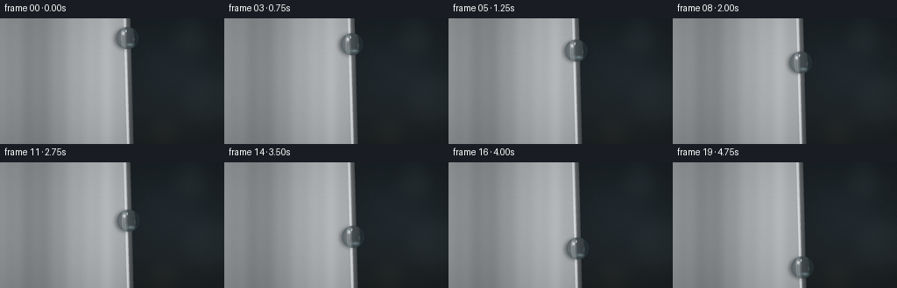
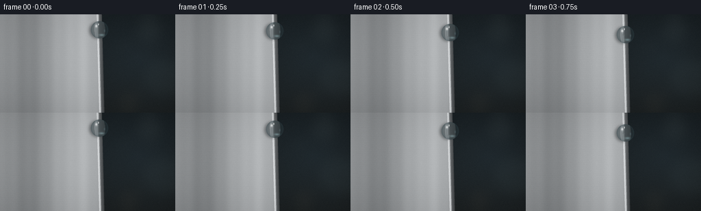

CODING AGENTS AS PIXEL WORLD MODELS
traex/GPT-5.6-Sol · mechanics_0056
点击播放 · 原生 RGB 像素
逐轮保存的候选
回放视频、检查图与代码变化。
每份候选均可单独播放。实际图片检查记录在下方工具轨迹中。
候选 01播放与检查图
点击播放 · 原生 RGB 像素


展开代码变化
--- 上一保存版本
+++ 本次保存版本
@@ -0,0 +1,215 @@
+from pathlib import Path
+import json
+import numpy as np
+from PIL import Image, ImageDraw, ImageFilter
+import artifact_io
+
+CASE_DIR = Path(__file__).resolve().parent
+SPEC = json.loads((CASE_DIR / "task_spec.json").read_text())
+W, H = int(SPEC["width"]), int(SPEC["height"])
+N = int(SPEC["frames"])
+S = 4 # supersampling for clean circular optics
+w, h = W * S, H * S
+rng = np.random.default_rng(56)
+
+
+def edge_x(y):
+ """The nearly vertical, subtly perspective-tapered aluminum edge."""
+ return (145.2 + 0.026 * (y - H / 2.0)) * S
+
+
+def make_background():
+ yy, xx = np.mgrid[0:h, 0:w]
+ Y, X = yy / S, xx / S
+ ex = edge_x(Y)
+
+ # Deep, defocused studio background to the right of the sheet.
+ radial = np.sqrt(((X - 205) / 115) ** 2 + ((Y - 66) / 95) ** 2)
+ bg = np.zeros((h, w, 3), np.float32)
+ bg[..., 0] = 23 + 8 * (1 - np.clip(radial, 0, 1)) + 4 * Y / H
+ bg[..., 1] = 29 + 12 * (1 - np.clip(radial, 0, 1)) + 2 * Y / H
+ bg[..., 2] = 32 + 15 * (1 - np.clip(radial, 0, 1))
+
+ # Soft studio bokeh, intentionally far out of focus.
+ bokeh = Image.new("RGBA", (w, h), (0, 0, 0, 0))
+ bd = ImageDraw.Draw(bokeh, "RGBA")
+ spots = [
+ (218, 23, 24, (125, 139, 135, 19)),
+ (238, 93, 34, (119, 145, 148, 15)),
+ (188, 127, 18, (174, 149, 111, 13)),
+ (180, 48, 10, (176, 189, 181, 13)),
+ ]
+ for cx, cy, rr, col in spots:
+ bd.ellipse(((cx-rr)*S, (cy-rr)*S, (cx+rr)*S, (cy+rr)*S), fill=col)
+ bokeh = bokeh.filter(ImageFilter.GaussianBlur(10 * S))
+ bga = np.asarray(bokeh).astype(np.float32)
+ a = bga[..., 3:4] / 255.0
+ bg = bg * (1-a) + bga[..., :3] * a
+
+ # Brushed aluminum face: cool broad reflections plus very fine horizontal grain.
+ sheet = np.empty_like(bg)
+ broad = (16 * np.exp(-((X - 111) / 30) ** 2)
+ - 18 * np.exp(-((X - 34) / 25) ** 2)
+ + 8 * np.exp(-((X - 137) / 10) ** 2))
+ vertical = 4.0 * np.sin(X * 0.087) + 2.1 * np.sin(X * 0.31 + 1.3)
+ grain = (1.35 * np.sin(Y * 5.7 + X * 0.018)
+ + 0.85 * np.sin(Y * 13.4 + X * 0.006)
+ + 0.40 * np.sin(Y * 27.1))
+ lum = 149 + broad + vertical + grain - 8 * (Y / H)
+ sheet[..., 0] = lum + 7
+ sheet[..., 1] = lum + 10
+ sheet[..., 2] = lum + 12
+
+ # A broad vertical reflection gives the metal a clean studio-polished appearance.
+ sheen = 15 * np.exp(-((X - 122) / 12) ** 2)
+ sheet += sheen[..., None]
+ face = X * S < ex
+ bg[face] = sheet[face]
+
+ # Precision-machined bevel and thin side plane.
+ d = X * S - ex
+ bevel = (d >= -2.2*S) & (d < 0.9*S)
+ t = np.clip((d + 2.2*S) / (3.1*S), 0, 1)
+ bevel_lum = 214 - 68 * t + 18 * np.exp(-((t-0.20)/0.17)**2)
+ for c, off in enumerate((3, 5, 7)):
+ bg[..., c][bevel] = bevel_lum[bevel] + off
+ side = (d >= 0.9*S) & (d < 5.4*S)
+ st = np.clip((d - 0.9*S) / (4.5*S), 0, 1)
+ side_lum = 94 - 37 * st + 10 * np.exp(-((Y-32)/47)**2)
+ for c, off in enumerate((4, 7, 9)):
+ bg[..., c][side] = side_lum[side] + off
+ # Hairline highlight on the knife edge.
+ line = np.abs(d + 0.35*S) < 0.24*S
+ bg[line] = np.array([232, 238, 240], np.float32)
+
+ # Gentle optical vignette.
+ vignette = 1 - 0.14 * np.clip(((X-W/2)/(W*0.72))**2 + ((Y-H/2)/(H*0.78))**2, 0, 1)
+ bg *= vignette[..., None]
+
+ # Static, tiny sensor texture (kept subtle and temporally coherent).
+ low_noise = rng.normal(0, 0.75, (H, W)).astype(np.float32)
+ noise_im = Image.fromarray(np.uint8(np.clip(low_noise * 18 + 128, 0, 255))).resize((w, h), Image.Resampling.BICUBIC)
+ noise = (np.asarray(noise_im).astype(np.float32) - 128) / 18
+ bg += noise[..., None]
+ return np.clip(bg, 0, 255)
+
+
+BASE = make_background()
+
+
+def bilinear_sample(im, sx, sy):
+ x0 = np.floor(sx).astype(np.int32)
+ y0 = np.floor(sy).astype(np.int32)
+ x0 = np.clip(x0, 0, im.shape[1]-2)
+ y0 = np.clip(y0, 0, im.shape[0]-2)
+ x1, y1 = x0+1, y0+1
+ fx = (sx-x0)[..., None]
+ fy = (sy-y0)[..., None]
+ a = im[y0, x0] * (1-fx) + im[y0, x1] * fx
+ b = im[y1, x0] * (1-fx) + im[y1, x1] * fx
+ return a * (1-fy) + b * fy
+
+
+def add_wet_trace(im, cx, y0, cy, radius):
+ """A restrained hair-thin wet glint behind the moving drop."""
+ if cy <= y0 + 1:
+ return im
+ layer = Image.new("RGBA", (w, h), (0, 0, 0, 0))
+ draw = ImageDraw.Draw(layer, "RGBA")
+ # Trace hugs the edge, brightest immediately behind the droplet.
+ pts = []
+ steps = max(2, int(cy-y0))
+ for k in range(steps+1):
+ py = y0 + (cy-y0)*k/steps
+ px = edge_x(py) / S + 0.35
+ pts.append((int(px*S), int(py*S)))
+ draw.line(pts, fill=(220, 238, 241, 26), width=max(1, int(0.42*S)))
+ # A faint darker wetted halo, not a dangling tail.
+ draw.line([(x-int(0.35*S), y) for x,y in pts], fill=(60, 74, 78, 12), width=max(1, int(0.55*S)))
+ arr = np.asarray(layer).astype(np.float32)
+ a = arr[..., 3:4] / 255
+ return im*(1-a) + arr[..., :3]*a
+
+
+def render_drop(scene, cx, cy, r=12.7):
+ cxh, cyh, rh = cx*S, cy*S, r*S
+ # Soft contact/ambient shadow makes the sphere sit on the sheet edge.
+ shadow = Image.new("RGBA", (w, h), (0, 0, 0, 0))
+ sd = ImageDraw.Draw(shadow, "RGBA")
+ sd.ellipse((cxh-rh*1.02-2*S, cyh-rh*0.91+1*S,
+ cxh+rh*0.70-2*S, cyh+rh*0.91+1*S), fill=(4, 11, 14, 105))
+ shadow = shadow.filter(ImageFilter.GaussianBlur(2.1*S))
+ sh = np.asarray(shadow).astype(np.float32)
+ a = sh[..., 3:4] / 255
+ scene = scene*(1-a) + sh[..., :3]*a
+
+ pad = int(rh + 3*S)
+ x0 = max(0, int(cxh)-pad); x1 = min(w, int(cxh)+pad+1)
+ y0 = max(0, int(cyh)-pad); y1 = min(h, int(cyh)+pad+1)
+ yy, xx = np.mgrid[y0:y1, x0:x1]
+ u = (xx-cxh)/rh
+ v = (yy-cyh)/rh
+ rr = u*u + v*v
+ mask = rr <= 1.0
+ z = np.sqrt(np.maximum(0, 1-rr))
+
+ # Lens refraction: the metal edge bends and magnifies through the water sphere.
+ lens_scale = 0.54 + 0.08*(1-z)
+ sx = cxh + (xx-cxh)*lens_scale - 1.1*S*u*z
+ sy = cyh + (yy-cyh)*lens_scale - 0.65*S*v*z
+ refr = bilinear_sample(scene, sx, sy)
+ water = np.array([176, 207, 214], np.float32)
+ col = refr*0.90 + water*0.10
+
+ # Volumetric shading, Fresnel rim, and a subtle lower caustic.
+ directional = 0.98 + 0.055*(-0.58*u - 0.42*v)*z
+ col *= directional[..., None]
+ fres = (1-z)**2.0
+ col = col*(1-0.48*fres[..., None]) + np.array([35, 56, 63])*0.48*fres[..., None]
+ caustic = np.exp(-(((u-0.24)/0.43)**2 + ((v-0.60)/0.18)**2)*2.0)
+ col += caustic[..., None]*np.array([42, 55, 56])
+
+ # Fixed studio highlights on the spherical surface.
+ hi1 = np.exp(-(((u+0.37)/0.19)**2 + ((v+0.43)/0.23)**2)*2.0)
+ hi2 = np.exp(-(((u+0.12)/0.075)**2 + ((v+0.66)/0.095)**2)*2.0)
+ hi3 = np.exp(-(((u-0.58)/0.12)**2 + ((v-0.12)/0.22)**2)*2.0)
+ col = col*(1-0.74*hi1[...,None]) + 255*(0.74*hi1[...,None])
+ col = col*(1-0.88*hi2[...,None]) + 255*(0.88*hi2[...,None])
+ col += hi3[...,None]*np.array([16, 23, 25])
+
+ # Antialiased circular silhouette, unchanging in every frame.
+ coverage = np.clip((1.012 - np.sqrt(rr))*rh, 0, 1)
+ region = scene[y0:y1, x0:x1]
+ alpha = coverage[...,None] * mask[...,None]
+ region[:] = region*(1-alpha) + col*alpha
+
+ # Needle-bright contact sparkle where the edge meets the sphere.
+ glint = Image.new("RGBA", (w, h), (0, 0, 0, 0))
+ gd = ImageDraw.Draw(glint, "RGBA")
+ gx = edge_x(cy)/S
+ gd.ellipse(((gx-0.55)*S, (cy-r*0.55-0.7)*S,
+ (gx+0.55)*S, (cy-r*0.55+0.7)*S), fill=(244, 251, 251, 150))
+ ga = np.asarray(glint).astype(np.float32)
+ aa = ga[...,3:4]/255
+ scene = scene*(1-aa)+ga[...,:3]*aa
+ return scene
+
+
+frames = []
+y_start, y_end = 22.5, 120.2
+for i in range(N):
+ t = i/(N-1)
+ # Gravity-like smooth acceleration followed by a mild terminal-speed regime.
+ progress = 0.12*t + 0.88*(t**1.52)
+ cy = y_start + (y_end-y_start)*progress
+ cx = edge_x(cy)/S + 1.45
+ scene = BASE.copy()
+ scene = add_wet_trace(scene, cx, y_start, cy-11.8, 12.7)
+ scene = render_drop(scene, cx, cy, 12.7)
+ # Downsample supersampled optical render to the requested RGB frame.
+ frame = Image.fromarray(np.uint8(np.clip(scene, 0, 255)), "RGB").resize((W,H), Image.Resampling.LANCZOS)
+ frames.append(np.asarray(frame, dtype=np.uint8))
+
+frames = np.stack(frames, axis=0)
+artifact_io.save(frames, CASE_DIR)
+print(f"saved {frames.shape[0]} RGB frames at {frames.shape[2]}x{frames.shape[1]}")
可观测工具轨迹
实际执行的命令与返回图片。
命令 1exit 0
/bin/bash -lc "cat prompt.txt && printf '\\n--- GENERATION_RULES.md ---\\n' && cat GENERATION_RULES.md"
命令 2exit 0
/bin/bash -lc "cat task_spec.json && printf '\\n--- files ---\\n' && find . -maxdepth 2 -type f -printf '%p\\n' | sort"
命令 3exit 0
/bin/bash -lc 'cat artifact_io.py'
命令 4exit 0
/bin/bash -lc "cat > generate.py <<'PY'
from pathlib import Path
import json
import numpy as np
from PIL import Image, ImageDraw, ImageFilter
import artifact_io
CASE_DIR = Path(__file__).resolve().parent
SPEC = json.loads((CASE_DIR / \"task_spec.json\").read_text())
W, H = int(SPEC[\"width\"]), int(SPEC[\"height\"])
N = int(SPEC[\"frames\"])
S = 4 # supersampling for clean circular optics
w, h = W * S, H * S
rng = np.random.default_rng(56)
def edge_x(y):
\"\"\"The nearly vertical, subtly perspective-tapered aluminum edge.\"\"\"
return (145.2 + 0.026 * (y - H / 2.0)) * S
def make_background():
yy, xx = np.mgrid[0:h, 0:w]
Y, X = yy / S, xx / S
ex = edge_x(Y)
# Deep, defocused studio background to the right of the sheet.
radial = np.sqrt(((X - 205) / 115) ** 2 + ((Y - 66) / 95) ** 2)
bg = np.zeros((h, w, 3), np.float32)
bg[..., 0] = 23 + 8 * (1 - np.clip(radial, 0, 1)) + 4 * Y / H
bg[..., 1] = 29 + 12 * (1 - np.clip(radial, 0, 1)) + 2 * Y / H
bg[..., 2] = 32 + 15 * (1 - np.clip(radial, 0, 1))
# Soft studio bokeh, intentionally far out of focus.
bokeh = Image.new(\"RGBA\", (w, h), (0, 0, 0, 0))
bd = ImageDraw.Draw(bokeh, \"RGBA\")
spots = [
(218, 23, 24, (125, 139, 135, 19)),
(238, 93, 34, (119, 145, 148, 15)),
(188, 127, 18, (174, 149, 111, 13)),
(180, 48, 10, (176, 189, 181, 13)),
]
for cx, cy, rr, col in spots:
bd.ellipse(((cx-rr)*S, (cy-rr)*S, (cx+rr)*S, (cy+rr)*S), fill=col)
bokeh = bokeh.filter(ImageFilter.GaussianBlur(10 * S))
bga = np.asarray(bokeh).astype(np.float32)
a = bga[..., 3:4] / 255.0
bg = bg * (1-a) + bga[..., :3] * a
# Brushed aluminum face: cool broad reflections plus very fine horizontal grain.
sheet = np.empty_like(bg)
broad = (16 * np.exp(-((X - 111) / 30) ** 2)
- 18 * np.exp(-((X - 34) / 25) ** 2)
+ 8 * np.exp(-((X - 137) / 10) ** 2))
vertical = 4.0 * np.sin(X * 0.087) + 2.1 * np.sin(X * 0.31 + 1.3)
grain = (1.35 * np.sin(Y * 5.7 + X * 0.018)
+ 0.85 * np.sin(Y * 13.4 + X * 0.006)
+ 0.40 * np.sin(Y * 27.1))
lum = 149 + broad + vertical + grain - 8 * (Y / H)
sheet[..., 0] = lum + 7
sheet[..., 1] = lum + 10
sheet[..., 2] = lum + 12
# A broad vertical reflection gives the metal a clean studio-polished appearance.
sheen = 15 * np.exp(-((X - 122) / 12) ** 2)
sheet += sheen[..., None]
face = X * S < ex
bg[face] = sheet[face]
# Precision-machined bevel and thin side plane.
d = X * S - ex
bevel = (d >= -2.2*S) & (d < 0.9*S)
t = np.clip((d + 2.2*S) / (3.1*S), 0, 1)
bevel_lum = 214 - 68 * t + 18 * np.exp(-((t-0.20)/0.17)**2)
for c, off in enumerate((3, 5, 7)):
bg[..., c][bevel] = bevel_lum[bevel] + off
side = (d >= 0.9*S) & (d < 5.4*S)
st = np.clip((d - 0.9*S) / (4.5*S), 0, 1)
side_lum = 94 - 37 * st + 10 * np.exp(-((Y-32)/47)**2)
for c, off in enumerate((4, 7, 9)):
bg[..., c][side] = side_lum[side] + off
# Hairline highlight on the knife edge.
line = np.abs(d + 0.35*S) < 0.24*S
bg[line] = np.array([232, 238, 240], np.float32)
# Gentle optical vignette.
vignette = 1 - 0.14 * np.clip(((X-W/2)/(W*0.72))**2 + ((Y-H/2)/(H*0.78))**2, 0, 1)
bg *= vignette[..., None]
# Static, tiny sensor texture (kept subtle and temporally coherent).
low_noise = rng.normal(0, 0.75, (H, W)).astype(np.float32)
noise_im = Image.fromarray(np.uint8(np.clip(low_noise * 18 + 128, 0, 255))).resize((w, h), Image.Resampling.BICUBIC)
noise = (np.asarray(noise_im).astype(np.float32) - 128) / 18
bg += noise[..., None]
return np.clip(bg, 0, 255)
BASE = make_background()
def bilinear_sample(im, sx, sy):
x0 = np.floor(sx).astype(np.int32)
y0 = np.floor(sy).astype(np.int32)
x0 = np.clip(x0, 0, im.shape[1]-2)
y0 = np.clip(y0, 0, im.shape[0]-2)
x1, y1 = x0+1, y0+1
fx = (sx-x0)[..., None]
fy = (sy-y0)[..., None]
a = im[y0, x0] * (1-fx) + im[y0, x1] * fx
b = im[y1, x0] * (1-fx) + im[y1, x1] * fx
return a * (1-fy) + b * fy
def add_wet_trace(im, cx, y0, cy, radius):
\"\"\"A restrained hair-thin wet glint behind the moving drop.\"\"\"
if cy <= y0 + 1:
return im
layer = Image.new(\"RGBA\", (w, h), (0, 0, 0, 0))
draw = ImageDraw.Draw(layer, \"RGBA\")
# Trace hugs the edge, brightest immediately behind the droplet.
pts = []
steps = max(2, int(cy-y0))
for k in range(steps+1):
py = y0 + (cy-y0)*k/steps
px = edge_x(py) / S + 0.35
pts.append((int(px*S), int(py*S)))
draw.line(pts, fill=(220, 238, 241, 26), width=max(1, int(0.42*S)))
# A faint darker wetted halo, not a dangling tail.
draw.line([(x-int(0.35*S), y) for x,y in pts], fill=(60, 74, 78, 12), width=max(1, int(0.55*S)))
arr = np.asarray(layer).astype(np.float32)
a = arr[..., 3:4] / 255
return im*(1-a) + arr[..., :3]*a
def render_drop(scene, cx, cy, r=12.7):
cxh, cyh, rh = cx*S, cy*S, r*S
# Soft contact/ambient shadow makes the sphere sit on the sheet edge.
shadow = Image.new(\"RGBA\", (w, h), (0, 0, 0, 0))
sd = ImageDraw.Draw(shadow, \"RGBA\")
sd.ellipse((cxh-rh*1.02-2*S, cyh-rh*0.91+1*S,
cxh+rh*0.70-2*S, cyh+rh*0.91+1*S), fill=(4, 11, 14, 105))
shadow = shadow.filter(ImageFilter.GaussianBlur(2.1*S))
sh = np.asarray(shadow).astype(np.float32)
a = sh[..., 3:4] / 255
scene = scene*(1-a) + sh[..., :3]*a
pad = int(rh + 3*S)
x0 = max(0, int(cxh)-pad); x1 = min(w, int(cxh)+pad+1)
y0 = max(0, int(cyh)-pad); y1 = min(h, int(cyh)+pad+1)
yy, xx = np.mgrid[y0:y1, x0:x1]
u = (xx-cxh)/rh
v = (yy-cyh)/rh
rr = u*u + v*v
mask = rr <= 1.0
z = np.sqrt(np.maximum(0, 1-rr))
# Lens refraction: the metal edge bends and magnifies through the water sphere.
lens_scale = 0.54 + 0.08*(1-z)
sx = cxh + (xx-cxh)*lens_scale - 1.1*S*u*z
sy = cyh + (yy-cyh)*lens_scale - 0.65*S*v*z
refr = bilinear_sample(scene, sx, sy)
water = np.array([176, 207, 214], np.float32)
col = refr*0.90 + water*0.10
# Volumetric shading, Fresnel rim, and a subtle lower caustic.
directional = 0.98 + 0.055*(-0.58*u - 0.42*v)*z
col *= directional[..., None]
fres = (1-z)**2.0
col = col*(1-0.48*fres[..., None]) + np.array([35, 56, 63])*0.48*fres[..., None]
caustic = np.exp(-(((u-0.24)/0.43)**2 + ((v-0.60)/0.18)**2)*2.0)
col += caustic[..., None]*np.array([42, 55, 56])
# Fixed studio highlights on the spherical surface.
hi1 = np.exp(-(((u+0.37)/0.19)**2 + ((v+0.43)/0.23)**2)*2.0)
hi2 = np.exp(-(((u+0.12)/0.075)**2 + ((v+0.66)/0.095)**2)*2.0)
hi3 = np.exp(-(((u-0.58)/0.12)**2 + ((v-0.12)/0.22)**2)*2.0)
col = col*(1-0.74*hi1[...,None]) + 255*(0.74*hi1[...,None])
col = col*(1-0.88*hi2[...,None]) + 255*(0.88*hi2[...,None])
col += hi3[...,None]*np.array([16, 23, 25])
# Antialiased circular silhouette, unchanging in every frame.
coverage = np.clip((1.012 - np.sqrt(rr))*rh, 0, 1)
region = scene[y0:y1, x0:x1]
alpha = coverage[...,None] * mask[...,None]
region[:] = region*(1-alpha) + col*alpha
# Needle-bright contact sparkle where the edge meets the sphere.
glint = Image.new(\"RGBA\", (w, h), (0, 0, 0, 0))
gd = ImageDraw.Draw(glint, \"RGBA\")
gx = edge_x(cy)/S
gd.ellipse(((gx-0.55)*S, (cy-r*0.55-0.7)*S,
(gx+0.55)*S, (cy-r*0.55+0.7)*S), fill=(244, 251, 251, 150))
ga = np.asarray(glint).astype(np.float32)
aa = ga[...,3:4]/255
scene = scene*(1-aa)+ga[...,:3]*aa
return scene
frames = []
y_start, y_end = 22.5, 120.2
for i in range(N):
t = i/(N-1)
# Gravity-like smooth acceleration followed by a mild terminal-speed regime.
progress = 0.12*t + 0.88*(t**1.52)
cy = y_start + (y_end-y_start)*progress
cx = edge_x(cy)/S + 1.45
scene = BASE.copy()
scene = add_wet_trace(scene, cx, y_start, cy-11.8, 12.7)
scene = render_drop(scene, cx, cy, 12.7)
# Downsample supersampled optical render to the requested RGB frame.
frame = Image.fromarray(np.uint8(np.clip(scene, 0, 255)), \"RGB\").resize((W,H), Image.Resampling.LANCZOS)
frames.append(np.asarray(frame, dtype=np.uint8))
frames = np.stack(frames, axis=0)
artifact_io.save(frames, CASE_DIR)
print(f\"saved {frames.shape[0]} RGB frames at {frames.shape[2]}x{frames.shape[1]}\")
PY
python generate.py
ls -lh pixels.npz inspection.png transition_check.png index.html frames/00.png frames/19.png"命令 5exit 0
/bin/bash -lc "python - <<'PY'
import numpy as np
from pathlib import Path
from PIL import Image
files=sorted(Path('frames').glob('*.png'))
a=np.stack([np.asarray(Image.open(p)) for p in files])
print('shape/dtype/range:',a.shape,a.dtype,a.min(),a.max())
print('mean abs frame deltas:',np.round(np.abs(np.diff(a.astype(float),axis=0)).mean((1,2,3)),3).tolist())
z=np.load('pixels.npz')['pixels']
print('pixels tensor:', z.shape,z.dtype,'unique frames:',len({x.tobytes() for x in a}))
# approximate moving-object y from difference to frame 0, constrained around edge
base=a[0].astype(int)
for i in range(1,20):
d=np.abs(a[i].astype(int)-base).mean(2)
ys,xs=np.where((d>8)&(np.indices(d.shape)[1]>128)&(np.indices(d.shape)[1]<166))
print(i, round(float(np.median(ys)),1) if len(ys) else None, len(ys))
PY"视觉工具实际返回图片 1

视觉工具实际返回图片 2
保存候选 1 份；完成命令 5 次；可验证图片返回 2 张。原始 API 响应与完整日志保留在本地。